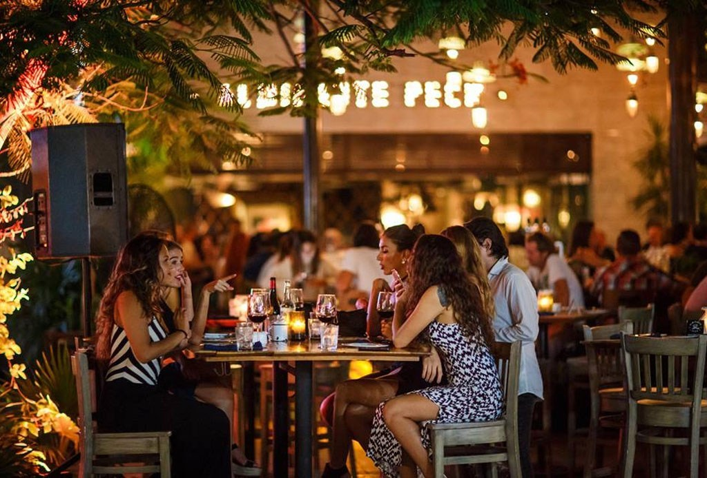
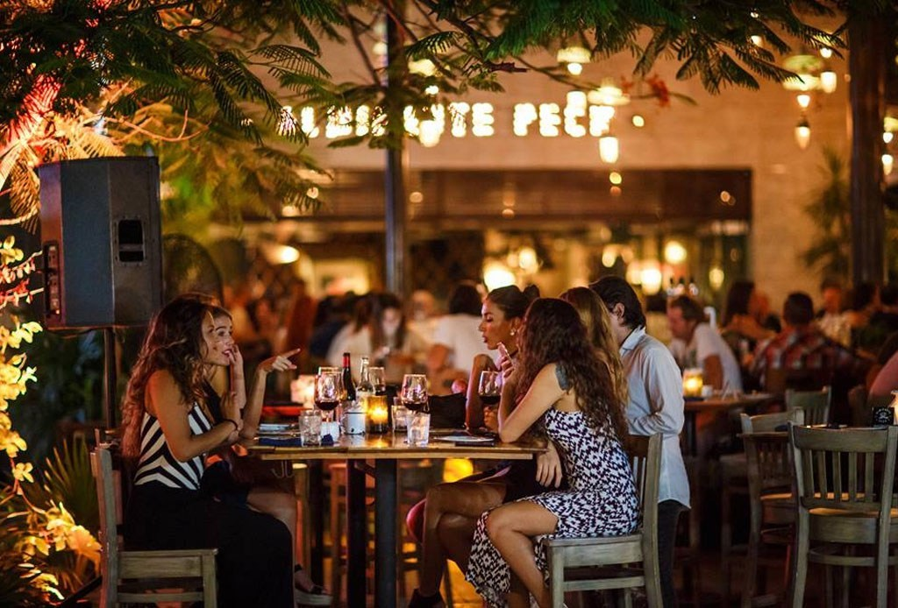

FONDA LA PILA
Biemvenido a Fonda la Pila, somos una pequeña empresa 100% mexicana dedicada a la elaboracion de alimentos como lo son: Hamburguesas, Tortas, Enchiladas, Papas a la francesa, tambien contamos con bebidas como: Cafe, Resfresco y Aguas.

 

Fonda la Pila, fue inagurada un 20 de marzo del año de 2018, desde ese entonces contamos con el servicio de comida y ofrecemos al publico una variedad de productos de facil consumo a un precio accesible.
Somos una Micro-Empresa 100 % Méxicana dedicada a la elbaracion de alimentos frescos y de facil consumo.
Fonda la Pila surgue debido a que se contaba con un local que se dejo de rentar por una estilista la cual lo usaba como estetica, debido a la zona le era dificil mantener los gastos que requeria el local asi como la mensualidad de la renta del local.
El 20 de febrero se tomo la decision de adaptar dicho local a las necesidades y la infraestructura para convertirno en una fonda que venderia en un principio hamburguesas y papas a la francesa, conforme obtuvimos clientes se fueron agregando mas platillos al menu.